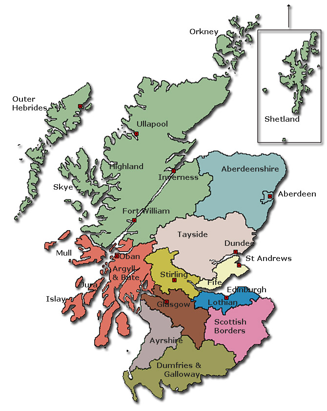
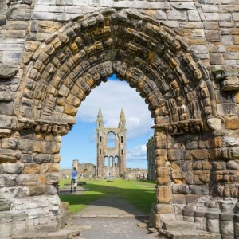
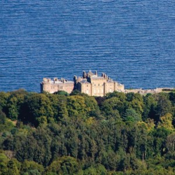
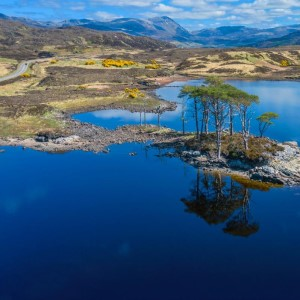
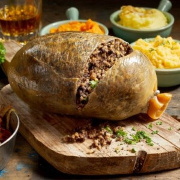

Waiting for that egg timer to wind down?
I'll keep you entertained! I've got plenty of articles here for you to browse.
Let's find out where our recipes come from
Recipes by location:
Articles
Looking for a good read? Scroll no further!

Recipes from Fife and St Andrews
A list of recipes from Fife
Recipes from Edinburgh
A list of recipes from the capital city
Recipes from Burns Country
A list of recipe from Ayrshire
Recipes from the Highlands and Islands
A list of recipes from the north
An Honest, Sonsie Face
The portraits of Rabbie Burns
Address to a Haggis
Our eponymous poem